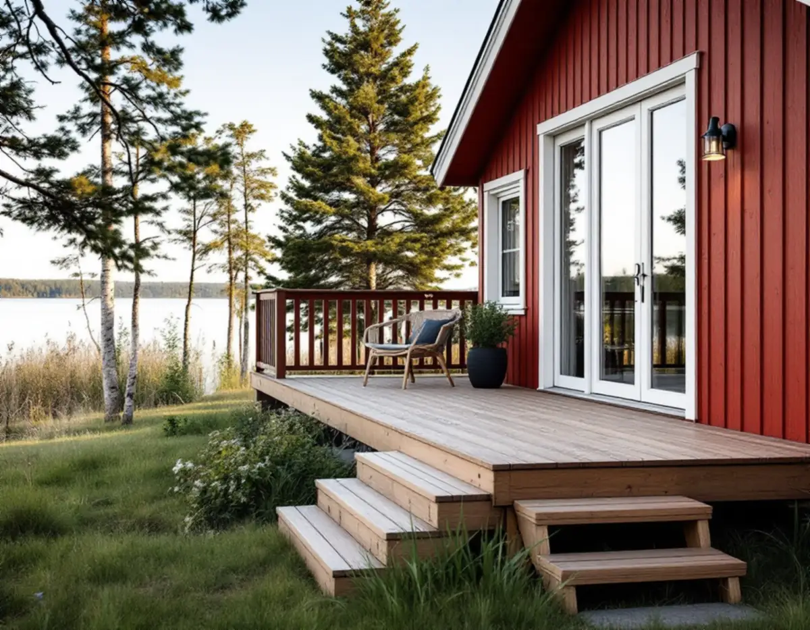
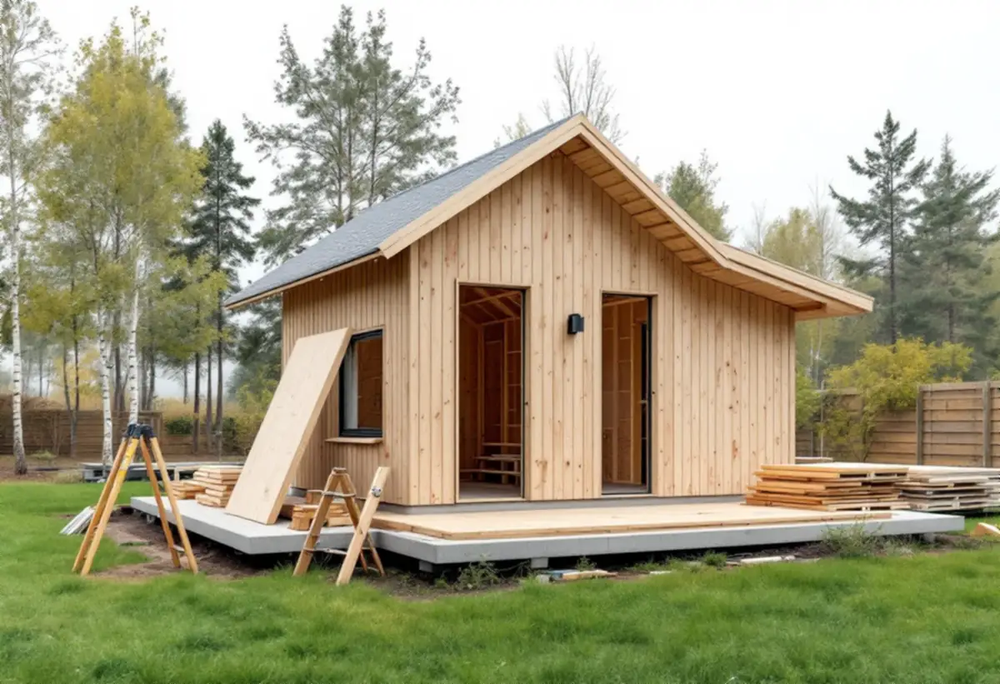

Kartan först
Vi ser om tomten ligger inom detaljplan, strandskydd eller ett särskilt värdefullt område.

På Mälaröarna ligger många tomter nära vatten, och en del ligger inom detaljplan medan andra inte gör det.
Beskriv jobbet kort.
Något blev fel. Kontrollera uppgifterna eller ring 08 12 410 276.
Vi tittar på jobbet på plats innan du får offert.
Du ser vad som ingår och vad det kostar.
Vi drar av ROT direkt och sköter ansökan.
Geal Entreprenad AB, Bromma. Org.nr 559303-7566.

Det avgör mer än man tror när en altan, en gäststuga eller en brygga ska byggas. Geal Entreprenad AB bygger altaner, trappor och mindre byggnader i hela Ekerö kommun och börjar med att reda ut vilka regler som gäller just din tomt.
Ekerö kommun beskriver en altan som en golvkonstruktion ovanpå mark som används som uteplats. Enligt kommunens sida om vanliga byggprojekt krävs inte bygglov för en altan utanför detaljplanelagt område. Inom detaljplan går gränserna vid två höjder: en altan lägre än 1,2 meter är lovfri oavsett var den placeras, och en altan mellan 1,2 och 1,8 meter är lovfri om den ligger inom 3,6 meter från bostadshuset och minst 4,5 meter från tomtgränsen.
Över 1,8 meter krävs bygglov. Det gör det också om du bygger ett rum under altanen, till exempel ett förråd, eller om altanen byggs in med glas. Kommunen påpekar att det gäller både fristående altaner och sådana som byggs ihop med huset.
På en sluttande tomt kan samma altan vara låg mot huset och hög ute vid kanten. Därför mäter vi marken vid platsbesöket innan stommen ritas, så att höjden vid altanens högsta punkt är känd från början.
Kommunen skriver att det som tidigare kallades attefallsåtgärder och friggebod nu samlas under bygglovsbefriade komplementbyggnader, komplementbostadshus och tillbyggnader. En komplementbyggnad får vara högst 30 kvadratmeter inom detaljplan och 50 utanför, med en nockhöjd på högst 4 respektive 4,5 meter. Alla sådana byggnader på tomten får tillsammans vara högst 45 kvadratmeter inom detaljplan och 65 utanför.
Redan byggda attefallshus och friggebodar räknas in i den potten. Står det en friggebod från 1990-talet vid tomtgränsen är den alltså en del av räkningen. Mer om de nya reglerna finns på sidan om attefallshus och regler.
Blir gäststugan ett komplementbostadshus, med eget kök, toalett och dusch, behöver du meddela kommunen när bostaden är klar så att lägenhetsregistret kan uppdateras. Ska den anslutas till kommunalt vatten och avlopp skickas en anmälan till Roslagsvatten i god tid, och med eget avlopp kan det behövas tillstånd eller anmälan om mängden avloppsvatten ökar.
Enligt kommunens sida om strandskydd gäller det generella strandskyddet 100 meter från strandkanten, på vissa ställen upp till 300 meter, och det omfattar både land och vatten. Inom området är det förbjudet att bygga nya byggnader, även komplementbyggnader, och att bygga bryggor eller staket som försämrar tillgängligheten. För det krävs dispens, och dispens kräver särskilda skäl.
Ligger vattnet utanför tomten på kommunens mark kan du ansöka om att arrendera vattenområdet för en brygga. Kommunen understryker att ett arrende inte garanterar dispens, och att en detaljplan kan styra hur och var bryggan får byggas. En sjöbod kräver dessutom bygglov.
Till en dispensansökan hör bland annat situationsplan, plan- och elevationsritning och en beskrivning av botten och växt- och djurlivet. Vi kan ta fram ritningsunderlaget för bryggan; själva ansökan skickar du som fastighetsägare.
I och med lagändringarna har kommunen gjort en ny bedömning av sina särskilt värdefulla byggnader och områden. Inom dem kan de nya undantagen inte användas, och detsamma gäller om en tillbyggnad eller komplementbyggnad hamnar närmare gräns än 4,5 meter utan grannarnas skriftliga medgivande.
Kommunen pekar också ut områden för totalförsvarets riksintressen. Där får du inte bygga ett bygglovsbefriat komplementbostadshus eller inreda ytterligare en bostad i ett enbostadshus. Därför börjar vi varje snickeriuppdrag på Ekerö med att titta på fastigheten i kommunens karta tillsammans med dig.
Vi ser om tomten ligger inom detaljplan, strandskydd eller ett särskilt värdefullt område.
Vi mäter marknivåer, avstånd till tomtgräns och till vattnet och ser vad som redan finns på tomten.
Tidigare friggebod, attefallshus och skärmtak läggs ihop så att du vet hur mycket som återstår.
Du får ett skriftligt förslag med arbete och material på separata rader.
Grund, stomme och trall eller panel byggs enligt ritningen, med trappor och räcken där höjden kräver det.
Vi går igenom resultatet med dig och lämnar underlag du kan spara för fastigheten.
Enligt Skatteverket ger en altan till ett småhus rotavdrag om den byggs ihop med huset. Ett fritidshus räknas också som småhus. Att bygga en helt ny fristående byggnad, som en friggebod, ett garage eller ett växthus, ger däremot inget avdrag, och inte heller att reparera båtbryggor eller staket.
Avdraget är 30 procent av arbetskostnaden, högst 50 000 kr per person och år och högst 75 000 kr tillsammans med rutavdrag, enligt Skatteverkets genomgång. Material och resor ingår inte. Vi drar avdraget direkt på fakturan.
Altanens yta och höjd, hur mycket marken sluttar och om det behövs trappor och räcken påverkar mest. För en gäststuga väger grunden och om den ska bli bostad tyngst, för en brygga förhållandena i vattnet. Platsbesöket är gratis och du får ett skriftligt kostnadsförslag.
Altan, väggar, dörrar och inredning.
Snickare i Stockholm →Takbyte, takbesiktning och plåtarbeten.
Takläggare på Ekerö →Stenhamra, Kungshatt och Adelsö.
Takrenovering på Ekerö →Utanför plan, strandskydd och eget avlopp.
Attefallshus på Ekerö →Anmälan, mjukt vatten och eget avlopp.
Badrumsrenovering på Ekerö →Nytt hus, vattenskydd och bergvärme.
Byggföretag på Ekerö →Väder, säsong och torktider på öarna.
Fasadmålning på Ekerö →Egnahem, villaområden och äldre gårdar på Ekerö.
Fasadrenovering på Ekerö →Sommarvillor och 60-talsvillor på Ekerö.
Fönsterbyte på Ekerö →Erskines centrum och villorna.
Fönsterrenovering på Ekerö →Villor i Stenhamra och omgjorda sommarhus.
Golvläggare på Ekerö →Slipa trägolv som ligger på golvvärme.
Golvslipning på Ekerö →Vedspis, egen brunn och nya sopsorteringen.
Köksrenovering på Ekerö →Sommarvillor, stugor och villor på Mälaröarna.
Målare på Ekerö →Takvatten, solceller och plåttak på Ekerö.
Plåtslagare på Ekerö →Kartan, solcellerna och skorstenen.
Takbyte på Ekerö →Tapet på timmer, papp och skivor.
Tapetsering på Ekerö →Kartan, inglasningen och registret.
Tillbyggnad på Ekerö →Braskamin och större fönster.
Totalrenovering på Ekerö →Eller ring 08 12 410 276, mån–fre 08–17.
Beskriv jobbet kort.
Något blev fel. Kontrollera uppgifterna eller ring 08 12 410 276.